RandstadRail rijdt!
- dinsdag 02 december 2008 10:36
- Geschreven door Joachim
Na tientallen jaren plannen, besluitvormen en realiseren is vandaag de volledige RandstadRail Erasmuslijn, die loopt van Rotterdam Hofplein naar Den Haag Centraal, in gebruik genomen. Na een kort welkomstwoord van algemeen directeur Pedro Peters van de RET, vertrok een gezelschap van hoogwaardigheidsbekleders richting Den Haag Centraal.
Er werd opgestapt op het nieuwe station Melanchthonweg. Vervolgens werd er gestopt en uitgestapt op de tussenliggende stations Rodenrijs, Pijnacker Centrum, Leidschenveen en Voorburg 't Loo. Hier werden de openingshandelingen verricht door vertegenwoordigers van de lokale overheid. Uiteindelijk werd het Haagse Centraal Station aangedaan. Hier werd de laatste openingshandeling verricht. Daarna kon het gezelschap een hapje en drankje nuttigen.
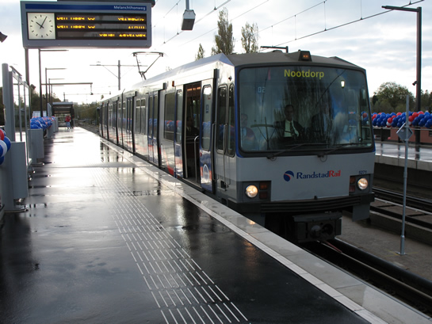
Een van de laatste metrosneltrams met eindbestemming "Nootdorp".

De ingang van station Melanchthonweg was versierd. Ook het station zelf werd versierd met balonnen in de kleuren van RandstadRail.
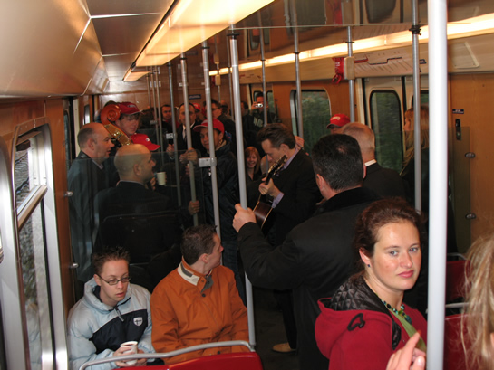
Een band maakte het in de metro, waar het soms zoeken was naar een zitplek door het grote gezelschap, extra feestelijk.
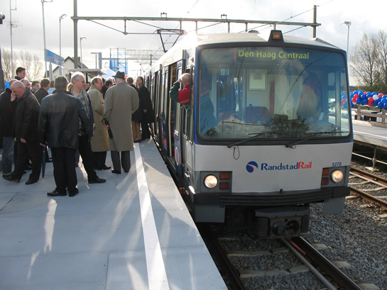
Er werd uitgestapt op station Rodenrijs, alwaar een openingshandeling plaatsvond.
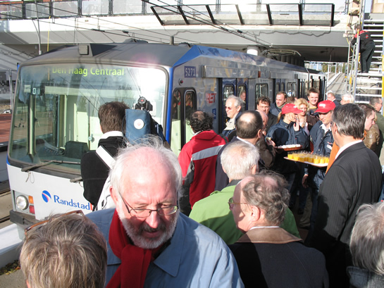
Daarna werd koers gezet naar station Pijnacker. Ook dit station werd feestelijk in gebruik genomen.
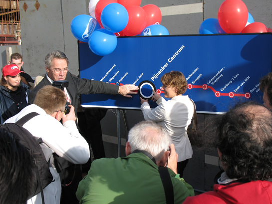
Jeannette Baljeu, wethouder van Verkeer en Vervoer van de gemeente Rotterdam en wethouder Piet van Adrichem van gemeente Pijnacker-Nootdorp verrichten de openingshandeling door het station "op de kaart" te zetten.
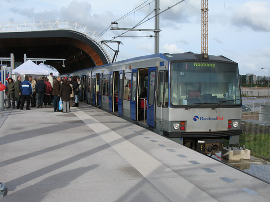
Ook station Leidschenveen wordt feestelijk geopend. Wagendienst 704, met op deze foto rijtuig 5269, zijn als eerste reizigersdienst aangekomen op station Leidschenveen.
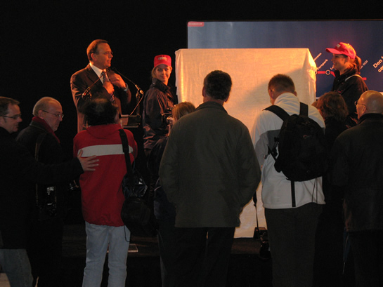
Uiteindelijk is men aangekomen op station Den Haag Centraal. Na een toespraak van algemeen directeur RET Pedro Peters, wordt ook dit station "op de kaart" gezet door de Rotterdams wethouder Jeannette Baljeu en portefeuillehouder Pieter van Woensel van Stadsgewest Haaglanden.
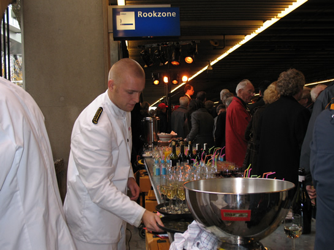
De gasten konden na afloop van de toespraak de ingebruikname van RandstadRail feestelijk afsluiten met een hapje en een drankje.
Er werd geen speciale dienstregeling gereden als gevolg van de opening van de RandstadRail Erasmuslijn. Het gezelschap maakte iedere rit gebruik van de reguliere dienstwagens, die elk kwartier een station aandeden. Vanaf ongeveer 12.30 uur konden ook de eerste passagiers vanaf station Nootdorp meerijden naar Den Haag Centraal. Deze passagiers konden op alle stations (behalve Forepark, dit station is nog gesloten) koffie, thee of erwtensoep geserveerd krijgen van de Rotterdamse en Haagse "Randstadrail Promoteams". Natuurlijk ontbrak hier het nodige folder- en promotiemateriaal niet.
Alle communicatieuitingen van RandstadRail zijn gekenmerkt door de rode en blauwe kleuren. Het symbool van "De nieuwe reisstijl" is een lijn met stations, zoals op een lijnennetkaart. Een deel van de metrosneltrams van RandstadRail is beplakt met deze rode, kenmerkende lijn. In de metrosneltrams zelf is inmiddels ook een lijnenkaart opgehangen, boven de deuren.
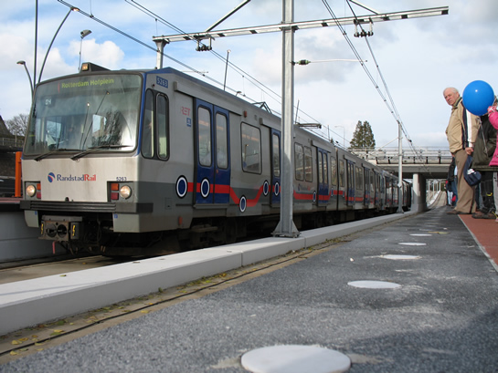
Rijtuig 5263 is al voorzien van de rode lijn die "De nieuwe reisstijl" markeert.
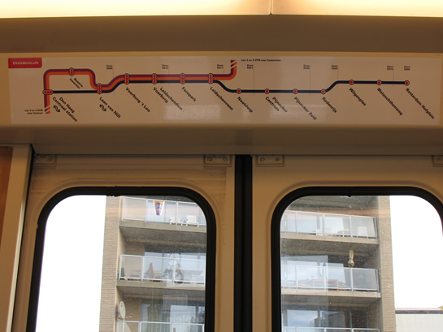
Een uitgebreide lijnennetkaart is boven de deuren opgehangen.
De RandstadRail Erasmuslijn is nog niet helemaal klaar. In 2009 zullen moderne metrosneltrams vanaf station Melanchthonweg, via de boortunnel die nu aangelegd wordt door de Rotterdamse wijk Blijdorp, doorrijden naar het metrostation Rotterdam Centraal. Daar sluit RandstadRail aan op de Erasmuslijn en rijden de rijtuigen van RandstadRail door naar station Slinge in Rotterdam Zuid.
Tot die tijd wordt het voorloopbedrijf uitgevoerd, dat vandaag in gebruik genomen is voor passagiers. Vandaag is een uniek moment in de geschiedenis van het Rotterdams openbaar vervoer: de Rotterdamse metro rijdt verder dan de stads- en regiogrenzen en dat is iets waar de RET en de Rotterdammers trots op mogen zijn!
Bij dezen wil retmetro.nl de RET en de HTM hartelijk feliciteren met de ingebruikname van de volledige RandstadRail Erasmuslijn. Hieronder nog enkele foto's van de stations die vandaag in gebruik genomen zijn:

Twee trams van de HTM halteren tegelijk op station Leidschenveen.
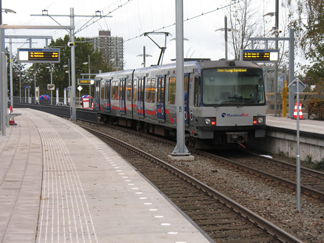
Een rijtuig Type T halteert op station Leidschendam - Voorburg.
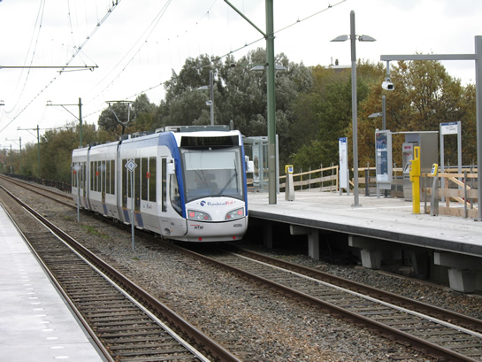
Een tram van de HTM rijdt station Voorburg 't Loo uit. Ook dit station werd feestelijk geopend.
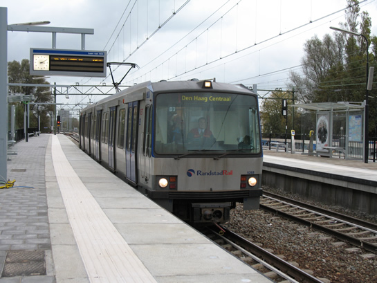
Rijtuig 5268 rijdt station Laan van NOI binnen.
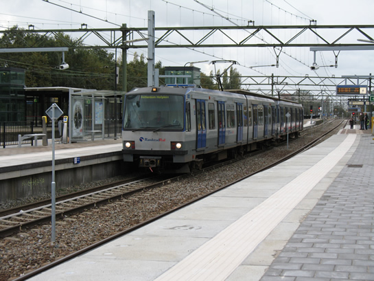
Op kop rijtuig 5269, op weg richting Rotterdam Hofplein. Station Laan van NOI.
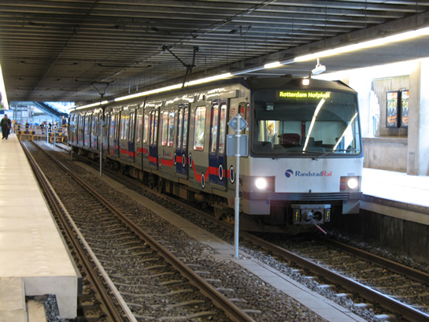
Rijtuig 5263, reeds beplakt, staat klaar voor vertrek richting Rotterdam Hofplein.